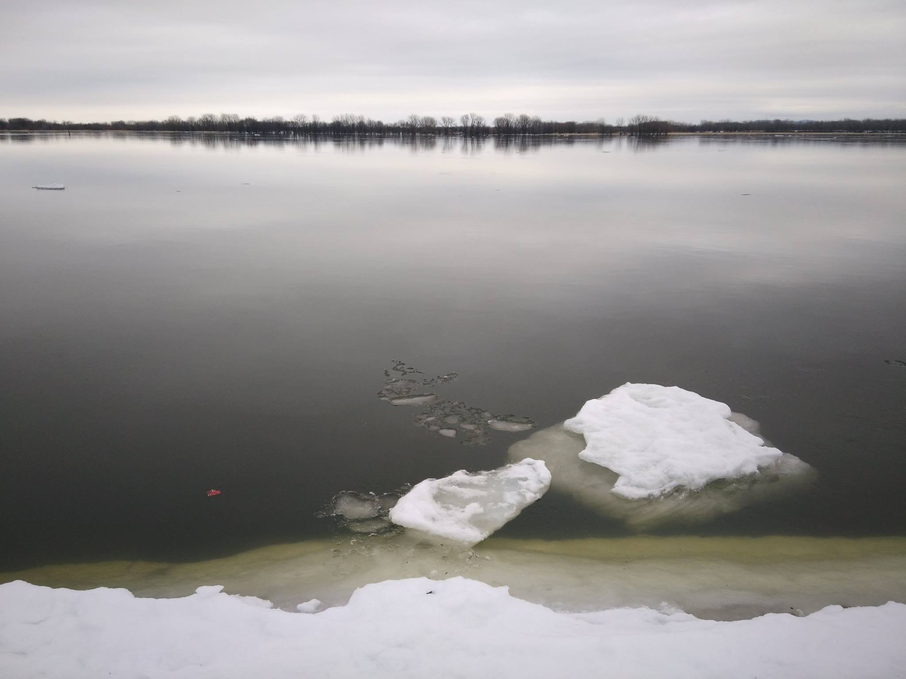
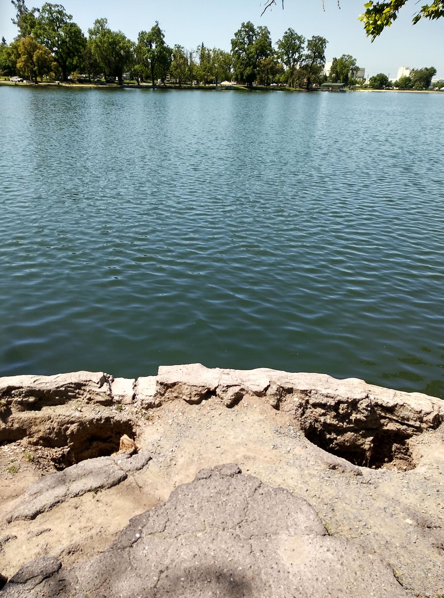
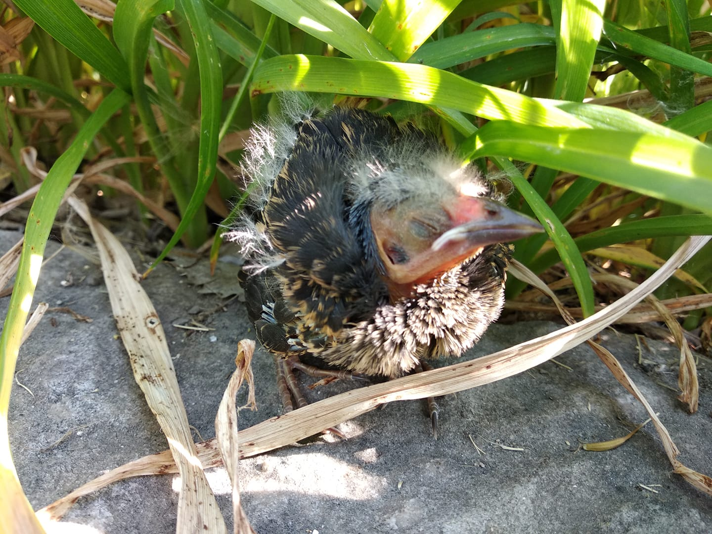
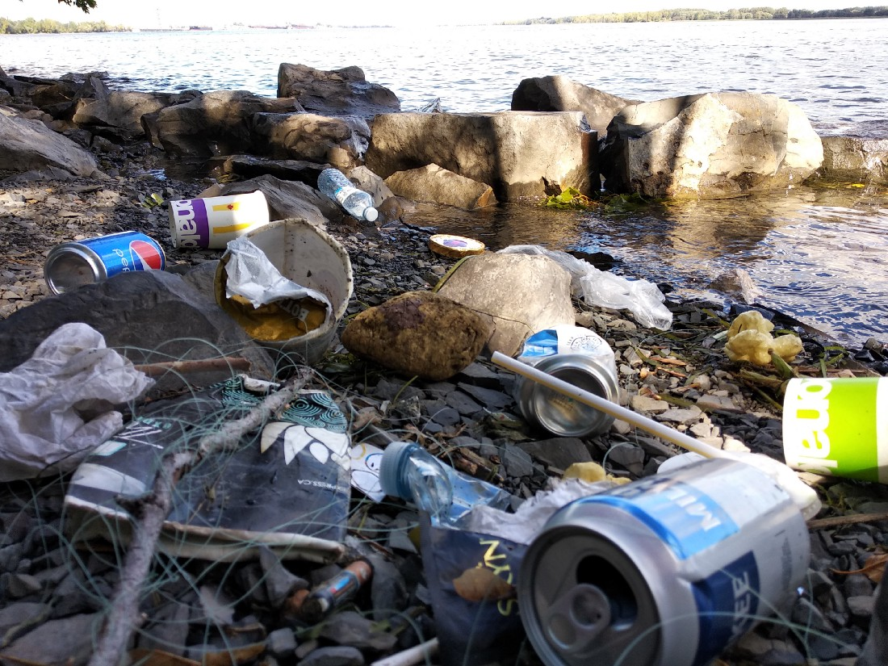

Poems
*All pictures are taken by me.

云舟泊落阳 浪梯踏天堂
咏月弹烟丝 斟风醉雪洋

坤神面阔 头顶江河
双眼玄冥 旷古未合

草下孤雏叫 林中万鸟啼
天地飞忙间 谁闻它音息

All the things lurking in the cracks of the riverbanks
Cans, paper cups, fishing line, batteries, … I have collected them all, and integrated them into the above landscape. Because I don’t know where else to put them either. In garbage bins, they will go to the landfill. In the river, they will flow to the Pacific patches. On land, they will sink into the crust layer marking the Great Plastic Era. Why bother moving them if everywhere is equally filthy?
To whom it applies, I have gathered what once you considered as your belongings right here under the blatant daylight, and I allocated a spot for them, secured with some rocks and branches. Now they can see you again the next time you come, which I hope you do soon, and marvel at how nature can always find a way to bring what you wanted to hide back in front of your eyes.